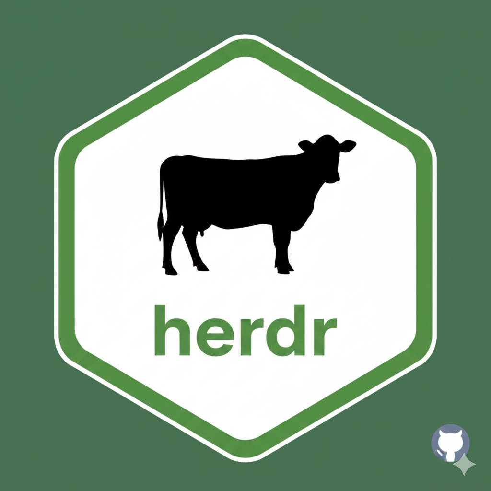

General Workflow: Step-by-Step Scripting Guide
Workflow.RmdIntroduction
This guide walks you through building and executing a complete
livestock environmental and nutritional assessment in R from scratch
using herdr.
Whether you are modeling a single dairy farm, an intensive swine or poultry operation, or a national inventory across regions, following this structured workflow ensures full consistency across IPCC Tier 2 greenhouse gases, upstream feed LCA & water deprivation (EF 3.1 / AWARE), agroecological land competition, and edible protein outputs.
1. Installation & Environment Setup
Step 1: Install and Load herdr
Install the package directly from GitHub:
if (!requireNamespace("remotes", quietly = TRUE)) {
install.packages("remotes")
}
remotes::install_github("JuanCBM99/herdr")
library(herdr)Step 2: Initialize Your Working Directory
Run herdr_init() in your R console or project root:
This generates three standard folders:
-
user_data/: The active working directory containing editable CSV scenario templates and reference libraries (ipcc_coefficients.csv,ipcc_mm.csv,feed_characteristics.csv,mapping.csv). Background databases (forages.parquet,fao_crops.parquet,fao_trade_matrix.parquet,ecoalim.parquet) are resolved automatically via bundled assets and central cache. -
Examples/: Pre-configured baseline datasets (Blank_IPCC_2019,Level1_Spain_Dairy_Cattle_2015,Level2_Spain_Dairy_Cattle_2015,Monogastric_Example,Video_Example) ready to use as templates. -
output/: Destination directory where results (total_emissions_and_land_use.csvandproduct_intensities.csv) are automatically saved.
2. Project Architecture, Demographic Keys & Strict Taxonomy
All data tables in herdr are linked using four
primary demographic cohort keys:
┌────────────────────────────────────────────────────────────────────────────────────────┐
│ PRIMARY DEMOGRAPHIC COHORT KEYS │
├─────────────────┬─────────────────────────┬──────────────┬─────────────────────────────┤
│ farm_id │ animal_tag │ region │ subregion │
│ (Mandatory) │ (Mandatory) │ (Optional) │ (Optional) │
│ e.g., "farm_1" │ e.g., "dairy_cows" │ e.g., spain │ e.g., "north" │
└─────────────────┴─────────────────────────┴──────────────┴─────────────────────────────┘⚠️ Critical Join & Ordering Rules: 1. Exact Key Matching: Every unique combination of
farm_id,animal_tag,region, andsubregiondeclared inlivestock_census.csvmust match the definition, weight, and manure tables exactly. Identifiers are strictly lowercase with underscores (no spaces or uppercase letters). 2. Spatial vs. Management Grouping: Together,(farm_id, region, subregion)define a physical farm/location. Different management phases or housing variants within the same farm (e.g., lactating vs. dry cows, or caged vs. free-range hens) should share the same(farm_id, region, subregion)and be distinguished viaanimal_tagso their enterprise intensities integrate properly in output tables. 3. Preserved Row Order: The top-to-bottom row order inlivestock_census.csvis preserved in all output tables (results$totals,results$intensities) and bar charts (plot_herdr_results()).
Strict Taxonomy (animal_type,
animal_subtype, production_role)
To guarantee unambiguous biophysical allocation and manure factor
lookups, herdr enforces strict values in
ruminant_definitions.csv and
monogastric_definitions.csv (no legacy aliases or empty
strings allowed):
| Table |
animal_type (Strict) |
animal_subtype (Strict) |
production_role (Strict) |
|---|---|---|---|
ruminant_definitions.csv |
cattle, sheep,
goat
|
dairy or meat
|
mature, replacement, or
slaughter
|
monogastric_definitions.csv |
swine |
meat |
mature, replacement, or
slaughter
|
monogastric_definitions.csv |
poultry |
meat or layer
|
mature, replacement, or
slaughter
|
3. Preparing Input Tables (user_data/)
You can edit the CSV templates located in user_data/
using any spreadsheet editor, the interactive Shiny App
(run_herdr_app()), or programmatically in R. For the full
column-by-column schema, see the Technical Data Dictionary.
Summary of Required Input Tables:
| Domain | File | Primary Purpose | Key Columns |
|---|---|---|---|
| 1. Population | livestock_census.csv |
Animal head counts (AAP) & display order |
farm_id, animal_tag,
region, subregion,
population
|
| 2. Body Weights | livestock_weights.csv |
Weight boundaries & cycle lengths |
adult_weight_kg,
productive_period_days, initial_weight_kg,
final_weight_kg
|
| 3. Definitions |
ruminant_definitions.csv monogastric_definitions.csv
|
Species taxonomy, IPCC/FEDNA traits & yields |
animal_type, animal_subtype,
production_role, diet_tag,
replacement_rate
|
| 4. Feeding Rations |
diet_profiles.csv diet_ingredients.csv
|
Macro shares & micro feedstuffs |
forage_share,
concentrate_share, ingredient,
ingredient_share
|
| 5. Manure Systems | manure_management.csv |
Housing, storage & pasture shares |
system_base, system_variant,
system_climate, b_0,
allocation
|
Two Golden Rules for Diets & Manure:
-
Diet Proportions: In
diet_profiles.csv,forage_share + concentrate_share + milk_share + milk_replacer_sharemust sum to 100%. Indiet_ingredients.csv,ingredient_sharevalues must sum to 100% within each active category. -
Manure Allocations: In
manure_management.csv, the sum ofallocationfor each unique cohort must equal exactly 1.0 (100%).
4. Executing the Environmental Assessment
4.1. Consolidated Pipeline
(generate_impact_assessment)
The fastest and most complete way to run the model is
generate_impact_assessment(). It executes the entire
upstream chain (energy balance, DMI, enteric fermentation, manure
management, upstream feed LCA & water deprivation, agroecological
land use, and GLEAM production) and returns a named list with
two dataframes:
-
results$totals(saved tooutput/total_emissions_and_land_use.csv): Table 1 — Absolute Bio-Environmental Inventory & Per-Head Metrics for every cohort. -
results$intensities(saved tooutput/product_intensities.csv): Table 2 — Enterprise-Integrated Commercial & Nutritional Intensities across milk, meat, eggs, wool, edible protein, and Mottet (2017) Protein FCRs.
library(herdr)
# Run full assessment for reference year 2024
results <- generate_impact_assessment(
farm_country = "Spain",
year = 2024,
automatic_cycle = FALSE,
gwp_report = "AR5",
saveoutput = TRUE
)
# Inspect Table 1: Absolute cohort inventory & per-head footprints
head(results$totals)
# Inspect Table 2: Enterprise-integrated product & protein intensities
head(results$intensities)How Table 1 (totals) and Table 2
(intensities) Work Together:
| Output Table | Scope & Purpose | Key Columns |
|---|---|---|
Table 1
(results$totals) |
Direct Cohort Inventory: Reports the
exact direct emissions, feed intake, land use, water deprivation, and
per-head footprint of each individual cohort (mature,
replacement, slaughter). |
CO2eq_enteric, CO2eq_manure,
CO2eq_N2O_direct, CO2eq_N2O_indirect,
CO2eq_feed_fossil_Gg, CO2eq_feed_luc_Gg,
CO2eq_Total_Gg, CO2eq_cradle_to_farm_Gg,
Land_cropland_m2,
Land_grassland_convertible_m2,
Land_grassland_unconvertible_m2, Land_m2,
Water_feed_m3, CO2eq_Total_head,
CO2eq_cradle_to_farm_head, Land_head,
Water_head
|
Table 2
(results$intensities) |
Enterprise-Integrated Intensities:
Groups cohorts by enterprise
(farm_id, region, subregion, animal_type, animal_subtype)
and attributes non-commercial rearing/breeding overhead
(replacement and mature breeders) to
commercial outputs (milk, meat,
egg, wool, protein). |
milk_FPCM_kg,
meat_carcass_weight_kg, egg_fresh_kg,
wool_kg, total_protein_kg,
GHG_intensity_*, GHG_cradle_to_farm_*,
Land_intensity_*, Water_intensity_*,
Protein_FCR_total, Protein_FCR_cropland
|
4.2. Modular Step-by-Step Execution
Researchers seeking intermediate physiological outputs can run individual modules sequentially:
# 1. Animal Demography & Population Balance
pop_data <- calculate_population(automatic_cycle = FALSE)
# 2. Weighted Nutritional Diet Characteristics
feed_vars <- calculate_weighted_variable()
# 3. Gross Energy Intake (GE) & Monogastric Metabolizable Energy (ME)
ge_data <- calculate_ge()
mono_me <- calculate_monogastric_energy()
# 4. Dry Matter Intake (DMI) & Volatile Solids (VS)
dmi_data <- calculate_DMI()
vs_data <- calculate_vs()
# 5. Enteric Methane Emissions (CH4)
enteric_emiss <- calculate_emissions_enteric()
# 6. Manure Methane & Nitrous Oxide (CH4, Direct & Indirect N2O)
manure_ch4 <- calculate_CH4_manure()
manure_n2o_dir <- calculate_N2O_direct_manure()
manure_n2o_vol <- calculate_N2O_indirect_volatilization()
manure_n2o_lea <- calculate_N2O_indirect_leaching()
# 7. Upstream Feed LCA (Fossil vs LUC CO2e) & AWARE Water Deprivation
feed_lca <- calculate_feed_emissions()
# 8. Feed Land Use Footprint & FAO Trade Origin
land_data <- calculate_land_use(farm_country = "Spain", year = 2024)
# 9. Animal Productivity & Edible Human Protein (GLEAM)
prod_data <- calculate_production()5. Visualizing & Benchmarking Results
Pass results directly to
plot_herdr_results() to generate publication-ready stacked
ggplot2 charts. You can combine any
impact_category ("ghg",
"land", "water", "overview",
"fcr") with any
functional_unit ("total",
"product", "milk", "meat",
"egg", "wool", "protein",
"head", "fcr"):
# 1. Multi-Impact Overview (Carbon, Land, and Water panels side by side)
p_overview <- plot_herdr_results(
df = results,
group_cols = c("animal_type", "region"),
func_name = "generate_impact_assessment",
impact_category = "overview",
functional_unit = "total"
)
# 2. Carbon Footprint per kg Commercial Product (Scope 1 + Feed Fossil + Feed LUC)
p_product_ghg <- plot_herdr_results(
df = results,
group_cols = c("animal_type", "animal_subtype"),
func_name = "generate_impact_assessment",
impact_category = "ghg",
functional_unit = "product"
)
# 3. Agroecological Land Footprint per kg Edible Protein (m2 / kg human protein)
p_protein_land <- plot_herdr_results(
df = results,
group_cols = c("animal_tag"),
func_name = "generate_impact_assessment",
impact_category = "land",
functional_unit = "protein"
)
# 4. AWARE Water Deprivation per Animal Head (m3 depriv. / head / year)
p_head_water <- plot_herdr_results(
df = results,
group_cols = c("animal_type"),
func_name = "generate_impact_assessment",
impact_category = "water",
functional_unit = "head"
)
# 5. Protein Feed Conversion & Human Food Competition (Mottet et al. 2017)
p_fcr <- plot_herdr_results(
df = results,
group_cols = c("animal_type", "animal_subtype"),
func_name = "generate_impact_assessment",
impact_category = "fcr",
functional_unit = "fcr"
)
# Display chart
print(p_product_ghg)
# Export chart to disk
ggplot2::ggsave("output/product_intensity_chart.png", plot = p_product_ghg, width = 10, height = 6, dpi = 300)6. Common Issues & Troubleshooting
| Issue / Alert | Cause | Solution |
|---|---|---|
| Missing Cohorts Error | An animal_tag in Census is missing in
definitions, weights, or manure tables. |
Ensure all 4 keys (farm_id,
animal_tag, region, subregion)
match across all input tables. |
Invalid animal_subtype or
production_role |
A non-standard value (e.g. beef,
other, or blank) was entered in definitions. |
Use strictly dairy or meat
for ruminants, meat for swine, meat or
layer for poultry, and mature,
replacement, or slaughter for
production_role. |
| Shares do not sum to 100% | Diet category or ingredient proportions do not sum to 100. | Adjust forage_share,
concentrate_share, etc. in diet_profiles.csv,
or ingredient_share in
diet_ingredients.csv. |
| Manure allocation != 1.0 | Allocations for a cohort do not sum to 1.0. | Adjust allocation values in
manure_management.csv so their sum equals exactly 1.0 per
cohort. |
| Unknown Ingredient | An ingredient in diets is missing in reference libraries. | Add the ingredient to
feed_characteristics.csv and mapping.csv (see
Adding a New Ingredient). |
Next Steps
- Technical Data Dictionary — detailed column-by-column schema and database connectors.
- Interactive Shiny App — walk through the graphical interface.
- Herd Demography & Population Dynamics — reproductive cycles, AAP rules, and automatic closures.
- Theoretical Basis — complete mathematical formulation (IPCC Tier 2, GLEAM, IDF 2022, and Enterprise Attribution).